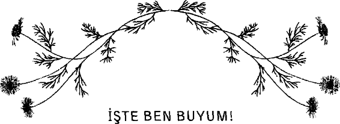
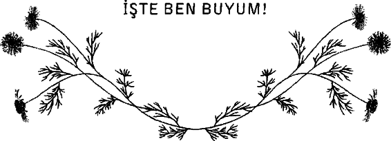
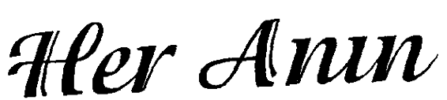
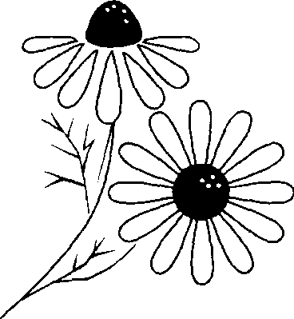
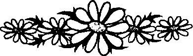

Sammy merkezdeki kimseyi tanımıyordu ama buna rağmen, melek yüzlü küçük kız için burası, evinde sevdiği insanların ellerinden çıkan tokatlara verilen bir ara anlamına geliyordu.
“Pekâlâ,” dedi dayağa maruz kalan çocuklara hizmet veren bu merkezdeki kreş öğretmeni, “bugün anne ile babanın resmini çizeceğiz.”
Sammy’nin anlamlı, büyük yuvarlak kahverengi gözlerinin üzerinde, şaşkınlık ifadesiyle dolu kaşlar birer yay çiziyordu. Dört yaşındaki kız bunu düşündü.
Babasının adını almış olan Sammy, babasını hiç görmemişti; bu yüzden onun resmini çizemeyecekti. Uzun siyah buklelerini omzunun bir tarafına atarak bir an tavana baktı, kollarını göğsünde kavuşturdu, sonra devam etmeye karar verdi. Anne; bunu yapmak daha kolaydı. Zayıf yuvarlak yüzünün yumuşak ayrıntıları şimdi konsantre olmaya çalışırken geriliyordu. Kalemini büyük kâğıdın üzerine yerleştirdi ve öfkeli ellerini kaldırmış halde kendisine doğru gelmekte olan kızgın bir kadın çizdi.
Bu korkutucu resmi gören yardımcı öğretmen çocuğu bir yana çekti. Yanma oturarak, yeni’, güzel gözleri, mutlu bir gül ümseyişi olan ve kollarını iki yana açmış bir kadın resmi çizdi. Narin kemikli, narin küçük kız apaçık bir merak ve isteklilikle bir an resmi dikkatle inceledi. Sammy, aceleyle, hemen önünde duran resme büyük melek kanatları çizdi. Bu güzel çocuk daha sonra geri çekilip durdu ve resme yeniden baktı. Sammy dizlerinin üzerine çöktü, sonra da yere uzandı. Ellerini iki yana olabildiğince açarak meleği kucakladı.
“Anne,” dedi sessizce ve yumuşacık, sevgi dolu. “Anne...”
Meleklerin umut ve hayallerin koruyucusu, mucize ve rüyaların bekçisi olduğu söylenir. Ayrıca meleklerin, tıpkı anne babaların yapması gerektiği gibi çocukları koruduğu ve kolladığı söylenir. Küçük Sammy’nin anne babasından alamadığı koruma, onun görünmez de olsa sevgi, güzellik ve koruma ile özdeşleştirdiği bir şeye olan inancını yok etmemişti.
Çocuk bakımı görevlisi daha sonra bana, “Onun yaşadıklarına bakılınca, bu çocuğun melekleri nereden öğrendiğini merak ediyor insan,” dedi.
“Belki de Sammy bunu yüreğinde biliyordu,” dedim Belki de hassas, küçük kalbini koruyan ve gözeten, gidecek başka bir yeri olmadığında ona bir ev veren koruyucu bir melek öğretmişti.
Daha sonra bu konuda bir psikologla konuştum. “En umutsuz durumların ortasında bile bir çocuğun kırılgan ruhu, anne babasının koşulsuz sevgisini arar,” dedi Dr. Levine.
Şimdi terapi ve yardım gören bu küçük çocuk ve annesi için kat edilecek yol uzun ve zorlu olacaktır. “Elayat boyu bir nesilden diğerine aktarılan yaraları unutmak ve iyileşmek çok fazla zaman ve çaba gerektirir,” dedi Dr. Levine. “Bir çocuğun anneb abasından görmeye ihtiyaç duyduğu koşulsuz sevgiyi karşılayacak şekilde anne babalık yapmayı yeniden öğrenmek zaman alır ve isteklilik gerektirir.”
Ne yazık ki, ne kadar çok çocuk dünyada sevgiyle büyümüyor, acı içinde hayatta kalıyor. Dr. Levine’in yorumunda olduğu gibi, “Çok sayıda çocuk röntgen ışınlarının altında yaşıyor. Sırtlarını saran güvenli bir battaniyeleri bile yok. Yıkanacak bir odaları yok. Kucakta taşınmak istiyorlar. Taşınmaya ihtiyaçları var. Onların resimleri kimsenin başucundaki sehpayı süslemiyor.”
Ailelerle çalıştığım onca seneye dayanarak, bunun doğru olduğunu biliyordum. Pek çok çocuğun kâbusu gecelerin yanı sıra gündüzleri de devam ediyor. Onların canavarları gerçek. Bunun ışığında, kendimizi daha evrensel düzeyde anne babalar olarak düşünmeli, verecek ve affedecek yüreği bulmalıyız. Bunu, kendileri kaosla, geçmiş acılarla, bencil ve disiplinsiz yetişmiş olmakla ve onları ‘Melek Anneler’ olmayı öğrenmekten alıkoyan korkularla, önyargılarla, umursamazlıkla ya da yaralarla savaşan anne babaların yerine yapmalıyız.
“Şanslılar ki,” dedi Dr. Levine, “çocuklarına, hangi nedenle olursa olsun, kötü davranan anne babalar için iyileşmek ve affedilmek mümkün.” Bu fırsatı arayacaklarını umalım. Bu arada, kendi rolümüzü hatırlamalıyız. İlk adım acı çeken bu çocukların ve aynı zamanda anne babalarının hayatlarındaki sevgi ve şefkat yokluğundan doğan boşluğu, açık yüreklilikle ve kollarımızı sonuna kadar açarak doldurmaktır. Sonra başka yollardan da koruma sağlamalıyız.
Bu gece, bu küçük kız ve onun gibi binlercesi, ‘koruyucuları’, küçük vücutları güvenle koruyacak, küçük ruhları üzerinet itreyerek koruyacak ve küçük yürekleri sevgiyle dolu koruyacak sevgi ve şefkati hâlâ öğrenmekte olan çocuklar adına özveriyle yapılan çalışmalar ve kurulan fonlar sayesinde güvendeler.
Hepimiz yüreklerimize dönmeli ve kendi ‘Melek Annelerimizi’, melekleri sadece kâğıt üzerinde kalan çocuklarla ve küçük yavrularım kollarında güvenle saramayan anne babalarla paylaşmalıyız.

Kelimeler bazı şeyleri anlatır. Ama her şeyi yaşatmaz. Bazen ben bile yabancı olurken kendime, sana nasıl anlatırım ki beni?
Neşeliyim diyeceğim, suratsızlığıma denk geleceksin... Espriliyim diyeceğim, belki ağlamalarıma denk düşeceksin... Özgürüm diyeceğim,b elki tutsaklarımda yakalayacaksın beni... Kendimi anlatıp da bir kalıba sığdırmak istemem düşüncelerimdeki beni.
Bazıları için herhangi biri...
Düşlediğin kadar insanım, insan olduğum kadar hatalı, hatalı olduğum kadar gerçeğin peşinde...



